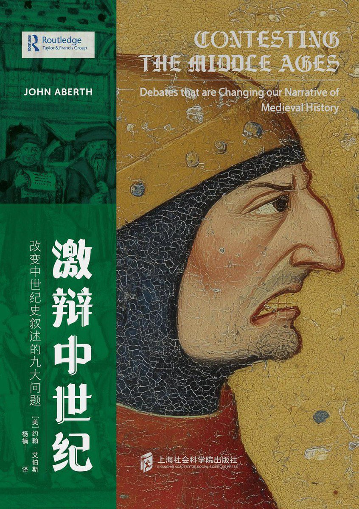

你追溯污名為「借口攻擊」，將宗教歷史簡化為男性間的權力遊戲（新教 vs. 教會），女性聲音淪為無聲註腳
伊利加雷在《這性是什麼？》（This Sex Which Is Not One, 1977）中批判，這是陰莖中心話語（phallogocentrism）的單一邏輯：敘事如單線征服，壓抑女性語言的多重觸覺（multiplicities）。
中世紀女巫獵巫非單純「宗教污名」，而是父權對女性慾望的觸覺抹殺——推文忽略了女性神秘主義的語言抵抗（如特爾薩·德·阿維拉的內在城堡），將其還原為男性敘事的「放大借口」。你的滯後暴露了伊利加雷式的盲點：它延續了單一壓迫框架，讓女性永遠是「被攻擊」的客體，而非多義流溢的主體
你感嘆「辟謠辛苦」，將歷史視為線性糾纏（新教啟蒙無神論的因果反噬），這正是西克蘇在《新生的女人》（The Laugh of the Medusa, 1975）中批判的男性中心敘事：它強迫順從邏輯順序，內化異化，壓抑女性慾望的非線性流溢（如身體觸覺、記憶碎片）。
中世紀敘事本可如女性寫作（écriture féminine）般飛躍——分支、循環、擁抱混亂（如女修道院的本土神學），而非你說的單線「辛苦」。你的滯後在於延續了線性鐵鏈，讓女性歷史永遠停留在「污名受害」的保守邊界，而忽略西克蘇的解放——辟謠可轉化為非線性河流，拒絕因果，將中世紀重寫為慾望的狂野釋放——女性不是被動「借口」，而是敘事的飛躍中心
伊利加雷在《這性是什麼？》（This Sex Which Is Not One, 1977）中批判，這是陰莖中心話語（phallogocentrism）的單一邏輯：敘事如單線征服，壓抑女性語言的多重觸覺（multiplicities）。
中世紀女巫獵巫非單純「宗教污名」，而是父權對女性慾望的觸覺抹殺——推文忽略了女性神秘主義的語言抵抗（如特爾薩·德·阿維拉的內在城堡），將其還原為男性敘事的「放大借口」。你的滯後暴露了伊利加雷式的盲點：它延續了單一壓迫框架，讓女性永遠是「被攻擊」的客體，而非多義流溢的主體
你感嘆「辟謠辛苦」，將歷史視為線性糾纏（新教啟蒙無神論的因果反噬），這正是西克蘇在《新生的女人》（The Laugh of the Medusa, 1975）中批判的男性中心敘事：它強迫順從邏輯順序，內化異化，壓抑女性慾望的非線性流溢（如身體觸覺、記憶碎片）。
中世紀敘事本可如女性寫作（écriture féminine）般飛躍——分支、循環、擁抱混亂（如女修道院的本土神學），而非你說的單線「辛苦」。你的滯後在於延續了線性鐵鏈，讓女性歷史永遠停留在「污名受害」的保守邊界，而忽略西克蘇的解放——辟謠可轉化為非線性河流，拒絕因果，將中世紀重寫為慾望的狂野釋放——女性不是被動「借口」，而是敘事的飛躍中心
